A short story you cross rather than read. Scroll is the only control: the sky heats from night to white, an expedition log prints itself onto a CRT, and at perihelion the signal cuts out.
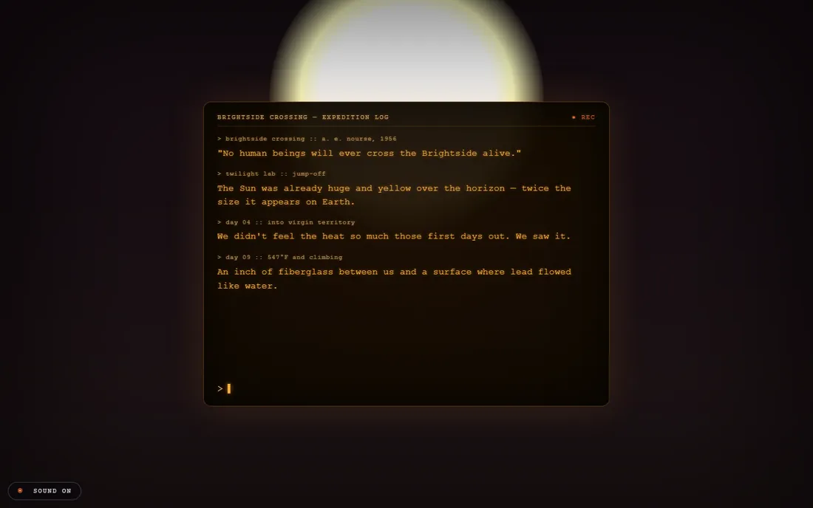
→ Open the live prototype — click, then scrollCaptured mid-crossing, day 09. Sound is on by default and follows the scroll position.
An adaptation of Brightside Crossing by Alan E. Nourse, first published in Galaxy Science Fiction, January 1956. Four men set out to cross the sunward face of Mercury at perihelion; one came back. The story is in the public domain and every line in the expedition log is quoted from that edition.
- Scroll is the clock — a single scroll position drives sky colour, sun size, haze, log entries and audio. No timeline, no autoplay, nothing running on its own.
- The screen stays put — the terminal is fixed; only the text inside it moves while the world around it heats up.
- The log types itself — entries print at their own scroll positions and rebuild instantly when you scroll back up.
- Procedural audio — Tone.js, no audio files. A 55 Hz bed detunes, the filter opens and a tritone creeps in as the heat rises; at the cut everything dies at once.
- Reduced motion respected — with
prefers-reduced-motionthe crossing stops animating and the full log prints on a static sky. - One file, no build — self-contained HTML; the only external dependency is Tone.js from a CDN.
Twelve kilometres of closed track no train has run on for a year, and one man who insists on guarding it. A railway ballad from 1919, adapted into something you walk rather than read — and built to settle one question: how far does a browser get on its own, with no game engine, no recorded audio and no pre-made artwork? One HTML file, 125 KB.
The same idea one step earlier — Brightside Crossing, above.
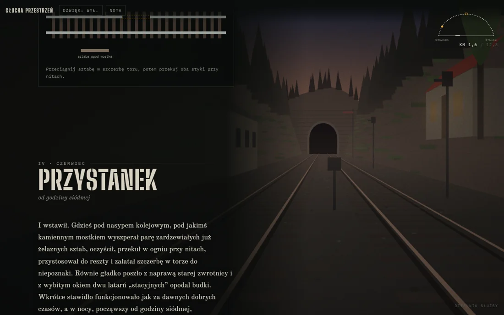
→ Open the live prototype — headphones, dark roomChapter IV, June — dusk over the closed line, with one of the between-chapter tasks on the left: fitting an iron bar into the gap in the rail. Nothing in the frame is a stored image; the scene is drawn by code, frame by frame. The piece itself is in Polish.
An adaptation of Głucha przestrzeń by Stefan Grabiński, from the collection Demon ruchu (The Demon of Motion), 1919. The story is in the public domain; the text was pulled out of the Wolne Lektury edition with a Python script, so every line the reader meets is the original one.
- Perspective written by hand — the ravine, the track and its sleepers, the firs, the linesman's hut and the semaphore are 3D geometry put through a one-point projection of my own. No WebGL, no libraries.
- A season is a set of parameters — sky colour, fog, vegetation, snow, rain, wind. As the reader moves through the story, the scene blends from one set into the next.
- Additive light — station lamps, locomotive headlights, lit carriage windows; over that, particle systems (snow, rain, leaves, steam), depth-based fog and film grain.
- Listening mode — the camera drops to the level of the rail.
- Not one sample in the file — wind, rain, crickets, frogs, crows, church bells, whispers, the rhythm of the wheels, the steam whistle and the brakes are built from noise (white, pink, brown), oscillators, filters and envelopes.
- The ravine answers back — reverb from a generated impulse response, with an echo bouncing alternately left and right. A literal rendering of Grabiński's line about the slopes that tossed the awakened echoes back and forth like balls.
- Four buses — ambience, memory, effects, listening — with random events scheduled from the current state of the scene.
- Scroll carries the narrative (IntersectionObserver), but between chapters the reader does the work the story describes: stamping the appointment letter, fitting a missing rail, lighting the lamps, pulling the signal levers, putting an ear to the track.
- Those controls are SVG — drag and press-and-hold through Pointer Events, and every one of them also works from the keyboard.
- After dark the text is lit only by a lantern that follows the cursor — a radial gradient tracking the pointer across the page.
- The page remembers — localStorage records that the space has fallen silent, so a second visit opens in emptiness.
The brief, the choice of text and the art direction are mine. The interaction concept and the implementation were developed together with Claude. An automated Playwright run in Chromium walks the whole piece, from the entry screen to the finale.
Typography: Old Standard TT · Big Shoulders Stencil · IBM Plex Mono.
→ github.com/mrmarczyk/deaf-space12-stage agentic pipeline from brief to master delivery. Four human decision gates. Everything else runs unattended.
Corporate video production requires coordinating many moving parts — voiceover, visuals, graphics, music, editing — even for a short film.
Traditionally this takes days of back-and-forth: sourcing images manually, building graphics frame by frame, assembling cuts by hand.
We wanted to know: how much of this can run automatically, with a human checking the results at key moments rather than doing every step?
A pipeline that treats video production as a system, not a one-off job.
Each element of the production — voiceover, visuals, graphics, music, assembly — is handled by a dedicated stage. The stages connect automatically. A human approves the result at four key decision points and lets the rest run.
Because every asset is generated from structured data, the same pipeline reproduces the film in another language or format without starting over.
Starting point: a finished voiceover script. A human voice actor recorded the narration. From there, the pipeline took over.
The system read the script and proposed a visual for each segment. It then searched Shutterstock and Freepik automatically, downloaded candidates and presented them for human selection.
Motion graphics were built in After Effects. The system assembled a first rough cut automatically, synced to the voiceover. A human editor reviewed and refined it. Music from stock library.
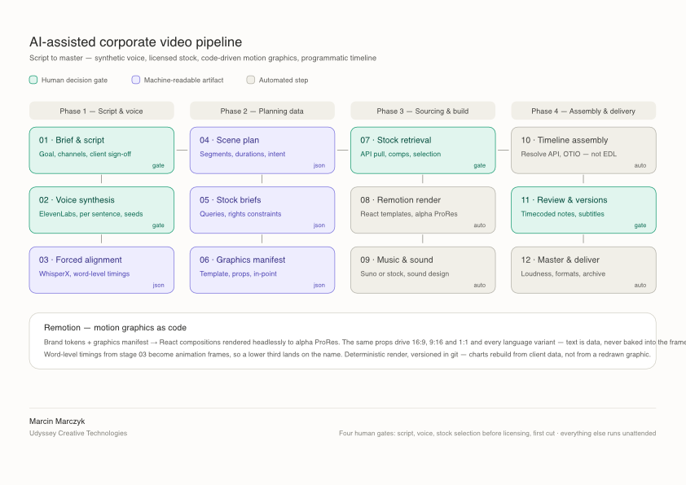
Tap the diagram to open it full size.
gate
gate
json
json
json
json
gate
auto
auto
auto
gate
auto
- Voice — human talent (ElevenLabs as drop-in replacement)
- Forced alignment — WhisperX, word-level timings as JSON
- Stock sourcing — Shutterstock + Freepik, automated search, human selection
- Motion graphics — After Effects
- First assembly — automatic
- Editorial polish — human editor
- Music — stock library
- Word-level timings from forced alignment as animation frames
- Text as data, never baked into the frame — charts rebuild from client data
- Remotion: same props driving all formats without redrawing
- Stages 01–07 — implemented and tested
- Planned features — in development
Brand sends a product photo. Pipeline returns a finished campaign film. No model booking. No studio. No shoot day.
YouTube Shorts · vertical 9:16 · generated model wearing a real product
- Model generated — Nano Banana Pro, personal character brief
- Product sourced — real sweater from e-commerce store (standard brand assets)
- Model dressed — Freepik / Magnific AI editing environment
- Identity maintained — same face, same fit, consistent lighting across frames
- Animation — static images to motion
- Edit — automatic assembly (Claude)
- Music — Suno
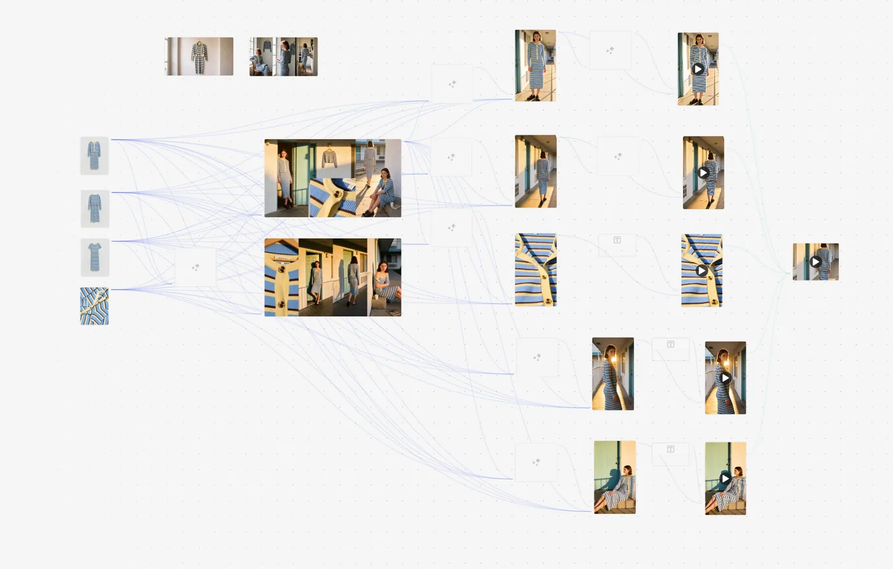
The system behind Witness, below.
11-stage pipeline treating every narrative element as a structured data entity — characters, props, sets, relationships — with a control loop at every stage.
AI tools can generate impressive individual images. What they cannot do — without a system — is maintain a coherent world across hundreds of shots. The same character in different scenes. The same prop in different hands. The same visual logic across different environments.
Model memory is unreliable. Prompt repetition is not architecture. The solution is structure.
Every narrative element becomes a structured data entity, and a control loop at every stage routes changes through human approval before committing to the canonical record.
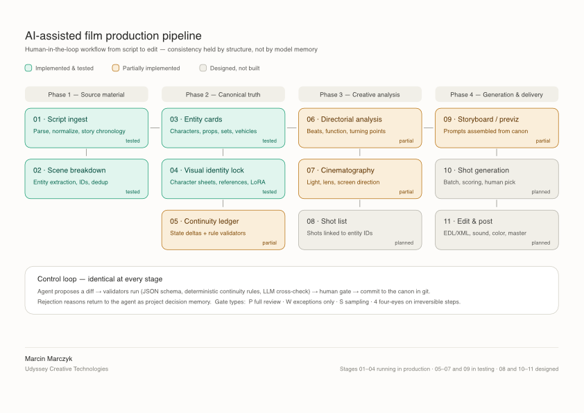
Tap the diagram to open it full size.
- Stages 01–04 — running in production
- Stages 05–07, 09 — in testing
- Stages 08, 10–11 — designed
Consistency held by structure, not by model memory.
Stage 04 of the film production pipeline above.
Generative AI loses characters. Generate a face once — it looks right. Generate it again with different lighting, different angle — and you have a different person. Most practitioners hope the model remembers. It doesn't.
- Polish woman, approximately 55 years old
- Early 1980s. Wire-rimmed glasses. Grey wool sweater. Hair pulled back.
- Defining mark — a scar on the forehead, used as a biometric anchor across all generations
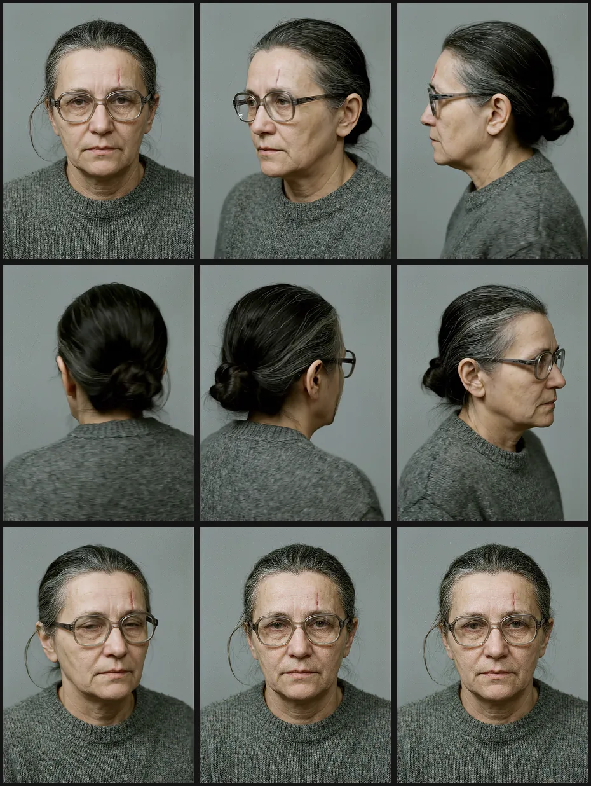
9-angle character sheet generated at neutral studio conditions. This sheet becomes the canonical reference for every subsequent generation.
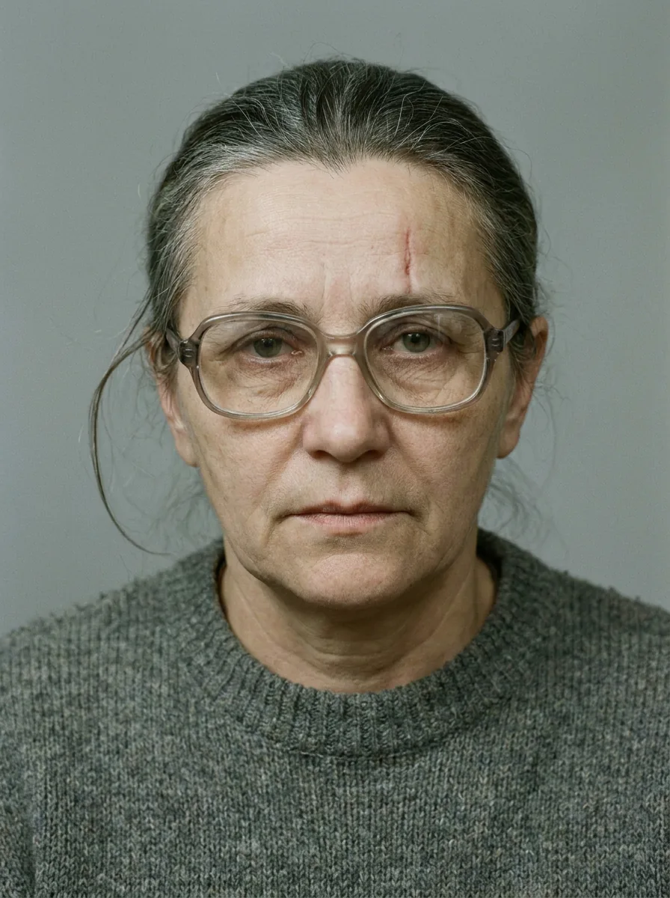
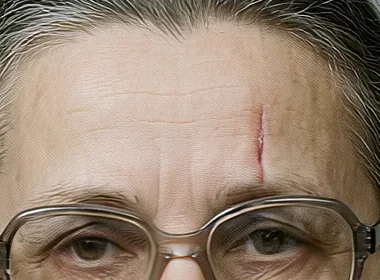
Biometric anchor: a scar on the forehead used as a consistency verification tool across all generated frames.
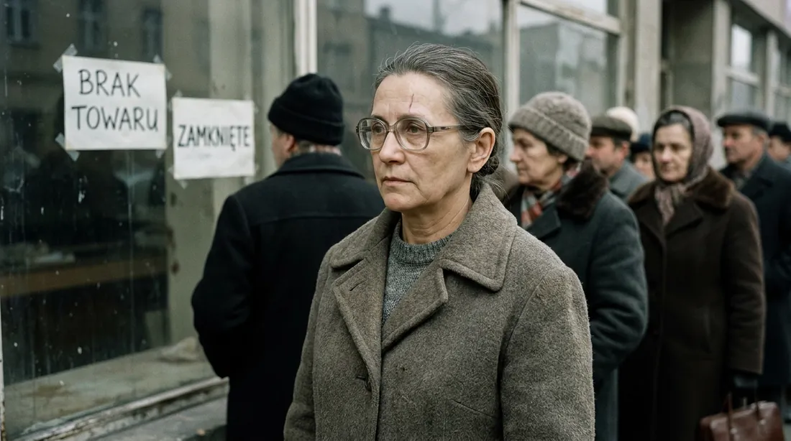
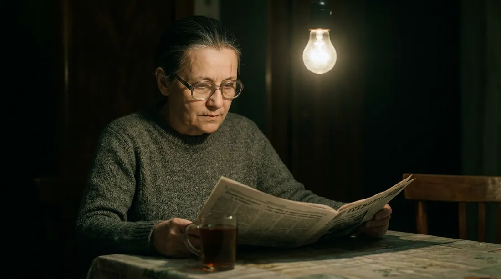
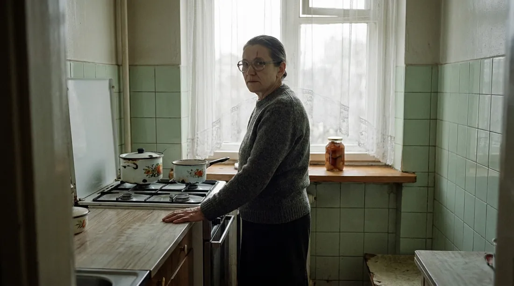
- Exterior — street queue, 1981 Warsaw — overcast daylight, crowd. Signs:
BRAK TOWARU/ZAMKNIĘTE. Medium shot, documentary framing. - Interior — apartment, evening — single bare bulb. Kitchen table, newspaper, glass of tea. Medium close-up, low key.
- Interior — kitchen, daytime — backlit window. Gas stove, enamel pots, lace curtain, jar of preserves. Medium shot from the doorframe.
VEO 3.1 generated a turntable rotation of the character on a lazy susan. A still character sheet gives nine fixed angles; the turntable gives continuous profile coverage — the full 360° reference needed for downstream consistency work, where a shot may sit between two of the nine canonical angles.
A conversation that never happened. Two versions of the same person — separated by twenty-five years — talk about what artificial intelligence has done to the film industry they both work in.
Work in progress. Episode 03 available as a preview. 13 episodes fully scripted.
One is 25 years old. The year is 2001. Film is still shot on tape. Crews are large. Budgets are fixed. Every shooting day costs a fortune.
One is 50 years old. The year is 2026. He sits alone in front of a screen. He has seen what happened in between.
Neither character is named. Neither character promotes a product. This is industry testimony, not advertising.
- The disappearance of production crews
- Without chain of title, the content is worth zero — no distributor, no insurer, no deal
- Collapse of the apprenticeship model
- The impossibility of archiving AI footage
- Who stops the process when nothing costs money
- The flooding of festival selections by zero-cost content
- Voice — ElevenLabs v3, Voice Design. Two distinct voices, same person, twenty-five years apart: age, register, rhythm, hesitation. The younger voice carries an enthusiasm the older one has lost.
- Image — Nano Banana Pro with personal likeness reference. Visual Identity Lock methodology applied.
- Rule — The older character never has clean answers about industry-wide problems. Only about his own practice.
An open draft standard for documenting AI use in audiovisual production — authored by Marcin Marczyk based on hands-on experience in film and TV production.
Addresses chain of title, IP rights verification, content classification, and distribution readiness for streaming platforms, broadcasters and festivals.
Drafted and structured with Claude as a writing tool. Submitted to PISF, MKiDN, SFP, Polish Filmmakers Union and Polish National Film School. Currently in public review.
- Chain of title documentation
- IP rights verification per tool
- Content classification: human / hybrid / fully AI-generated
- Tool registry with dated ToS snapshots
- Distribution readiness checklist
Apache 2.0 — free to use.